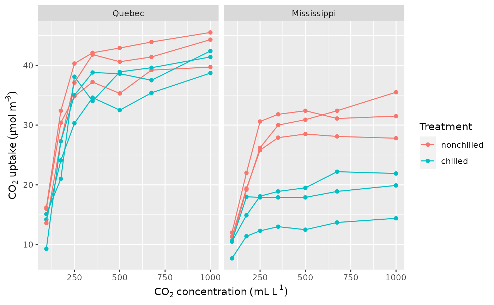
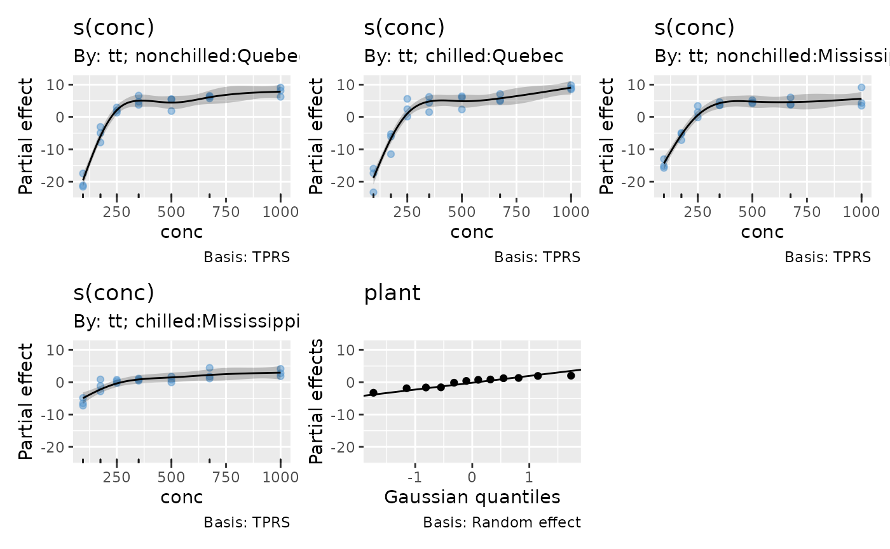
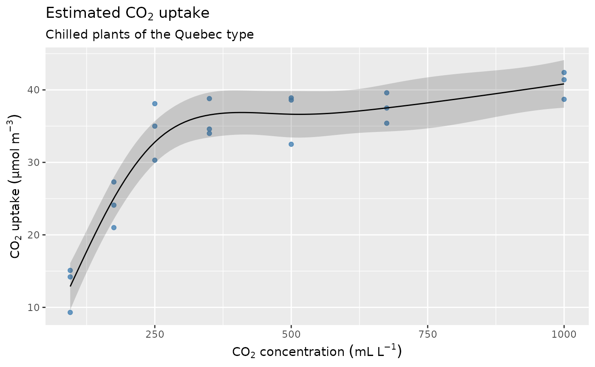
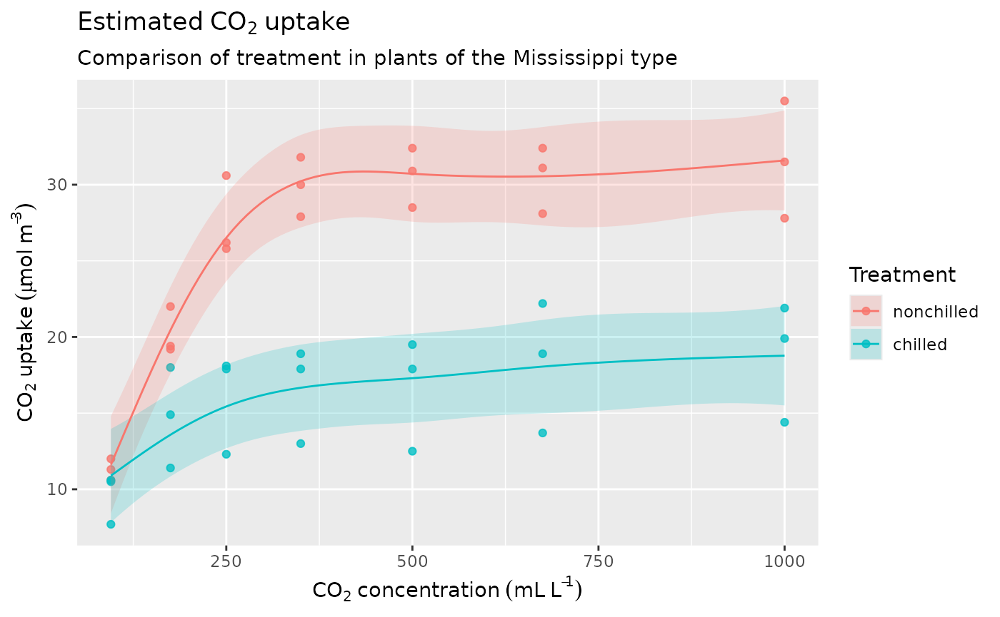
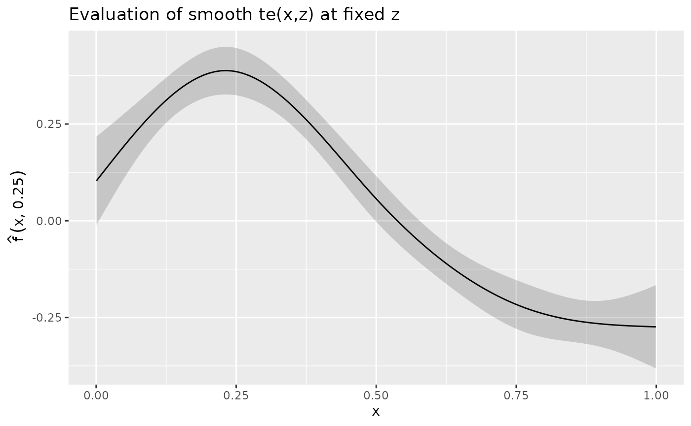
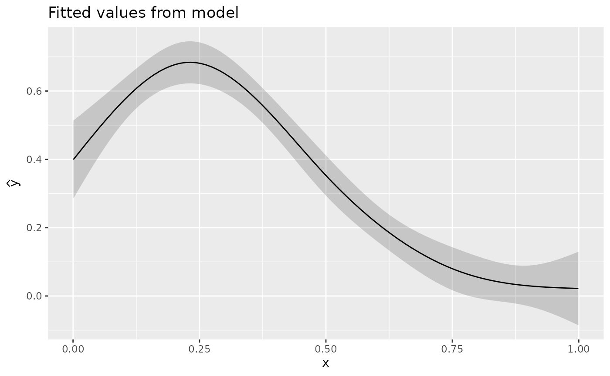
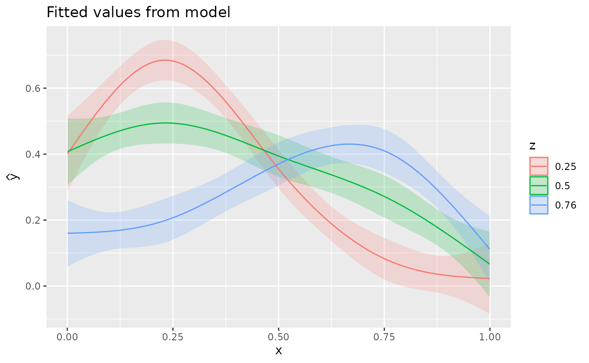

Having fitted a GAM or other model containing penalised splines, we often want to evaluate the model at some pre-specified values of the covariates. For more complex models, this will typically involve holding some covariates at fixed, representative values while visualising the change in the response or effect of a smooth over supplied values of one or more other covariates. The values of the covariates at which we evaluate a smooth or a model are called a data slice1.
This article will explain how to create data slices with {gratia} and
its data_slice() function, and how to use them to visualise
features of your fitted GAMs.
We’ll need the following packages for this article
library("mgcv")
#> Loading required package: nlme
#> This is mgcv 1.9-1. For overview type 'help("mgcv-package")'.
library("gratia")
library("dplyr")
#>
#> Attaching package: 'dplyr'
#> The following object is masked from 'package:nlme':
#>
#> collapse
#> The following objects are masked from 'package:stats':
#>
#> filter, lag
#> The following objects are masked from 'package:base':
#>
#> intersect, setdiff, setequal, union
library("ggplot2")
library("forcats")
library("datasets")Carbon Dioxide Uptake in Grass Plants
The first example uses a small data set from an experimental study of
the cold tolerance of the grass Echinochloa crusgalli. The data
are in data frame CO2 and provided with the {datasets}
package that ships with R.
## data load and prep
data(CO2, package = "datasets")
plant <- CO2 |>
as_tibble() |>
rename(plant = Plant, type = Type, treatment = Treatment) |>
mutate(plant = factor(plant, ordered = FALSE))
plant_ylab <- expression(CO[2] ~ uptake ~ (mu * mol ~ m^{-3}))
plant_xlab <- expression(CO[2] ~ concentration ~ (mL ~ L^{-1}))
plant |>
ggplot(aes(x = conc, y = uptake, group = plant, colour = treatment)) +
geom_point() +
geom_line() +
facet_wrap(~ type) +
labs(y = plant_ylab, x = plant_xlab, colour = "Treatment")
One way to model these data is to allow for different smooths for all
combinations of the treatment and type
covariates
plant <- plant |>
mutate(tt = fct_cross(treatment, type))
m_plant <- gam(uptake ~ treatment * type +
s(conc, by = tt, k = 6) + s(plant, bs = "re"),
data = plant, method = "REML", familly = Gamma(link = "log"))
overview(m_plant)
#>
#> Generalized Additive Model with 8 terms
#>
#> term type k edf statistic p.value
#> <chr> <chr> <dbl> <dbl> <dbl> <chr>
#> 1 treatment parametric NA 1 3.81 0.055975
#> 2 type parametric NA 1 26.1 < 0.001
#> 3 treatment:type parametric NA 1 6.38 0.014346
#> 4 s(conc):ttnonchilled:Quebec TPRS 5 4.66 87.4 < 0.001
#> 5 s(conc):ttchilled:Quebec TPRS 5 4.56 87.8 < 0.001
#> 6 s(conc):ttnonchilled:Mississippi TPRS 5 4.27 53.4 < 0.001
#> 7 s(conc):ttchilled:Mississippi TPRS 5 3.11 10.2 < 0.001
#> 8 s(plant) Random effect 12 7.10 7.93 < 0.001We can look at the fitted smooths using draw()
draw(m_plant, residuals = TRUE, scales = "fixed")
We might want to compare model fitted values for the treatment for
each of the types (origins), ignoring the random effect component. For
this we want to evaluate the model at a range of values of covariate
conc for some combinations of the other factors. This is a
data slice through the covariate space, which we can create using
data_slice(). To create a data slice for conc
for the Quebec type in the
chilled treatment we would use
ds1 <- data_slice(m_plant, conc = evenly(conc, n = 100),
type = level(type, "Quebec"), treatment = level(treatment, "chilled"))
ds1
#> # A tibble: 100 × 5
#> conc type treatment tt plant
#> <dbl> <fct> <fct> <fct> <fct>
#> 1 95 Quebec chilled nonchilled:Quebec Qn1
#> 2 104. Quebec chilled nonchilled:Quebec Qn1
#> 3 113. Quebec chilled nonchilled:Quebec Qn1
#> 4 122. Quebec chilled nonchilled:Quebec Qn1
#> 5 132. Quebec chilled nonchilled:Quebec Qn1
#> 6 141. Quebec chilled nonchilled:Quebec Qn1
#> 7 150. Quebec chilled nonchilled:Quebec Qn1
#> 8 159. Quebec chilled nonchilled:Quebec Qn1
#> 9 168. Quebec chilled nonchilled:Quebec Qn1
#> 10 177. Quebec chilled nonchilled:Quebec Qn1
#> # ℹ 90 more rowsNotice how data_slice() has filled in something for the
remaining covariates that we didn’t mention? In this case,
data_slice() doesn’t know how tt was created,
so it has chosen the modal level for the tt factor, which
is not the correct choice in this case. Instead, we need to specify the
correct level explicitly for tt
ds1 <- data_slice(m_plant, conc = evenly(conc, n = 100),
treatment = level(treatment, "chilled"), type = level(type, "Quebec"),
tt = level(tt, "chilled:Quebec"))
ds1
#> # A tibble: 100 × 5
#> conc treatment type tt plant
#> <dbl> <fct> <fct> <fct> <fct>
#> 1 95 chilled Quebec chilled:Quebec Qn1
#> 2 104. chilled Quebec chilled:Quebec Qn1
#> 3 113. chilled Quebec chilled:Quebec Qn1
#> 4 122. chilled Quebec chilled:Quebec Qn1
#> 5 132. chilled Quebec chilled:Quebec Qn1
#> 6 141. chilled Quebec chilled:Quebec Qn1
#> 7 150. chilled Quebec chilled:Quebec Qn1
#> 8 159. chilled Quebec chilled:Quebec Qn1
#> 9 168. chilled Quebec chilled:Quebec Qn1
#> 10 177. chilled Quebec chilled:Quebec Qn1
#> # ℹ 90 more rowsHaving created the data slice, we can predict from the model using
the combination of covariate values specified in our slice. We could use
predict.gam() for this, but the
fitted_values() function in {gratia} is easier to use,
especially for non-Gaussian models
fv1 <- fitted_values(m_plant, data = ds1, scale = "response", exclude = "s(plant)")
fv1
#> # A tibble: 100 × 10
#> .row conc treatment type tt plant .fitted .se .lower_ci .upper_ci
#> <int> <dbl> <fct> <fct> <fct> <fct> <dbl> <dbl> <dbl> <dbl>
#> 1 1 95 chilled Quebec chilled… Qn1 12.9 1.64 9.66 16.1
#> 2 2 104. chilled Quebec chilled… Qn1 14.4 1.57 11.3 17.4
#> 3 3 113. chilled Quebec chilled… Qn1 15.8 1.52 12.9 18.8
#> 4 4 122. chilled Quebec chilled… Qn1 17.3 1.48 14.4 20.2
#> 5 5 132. chilled Quebec chilled… Qn1 18.7 1.46 15.9 21.6
#> 6 6 141. chilled Quebec chilled… Qn1 20.1 1.45 17.3 23.0
#> 7 7 150. chilled Quebec chilled… Qn1 21.5 1.45 18.7 24.4
#> 8 8 159. chilled Quebec chilled… Qn1 22.8 1.45 20.0 25.7
#> 9 9 168. chilled Quebec chilled… Qn1 24.1 1.47 21.3 27.0
#> 10 10 177. chilled Quebec chilled… Qn1 25.4 1.48 22.5 28.3
#> # ℹ 90 more rowsNotice how we excluded the random effect term; even though we had to
specify something for the plant covariate we can ignore
this term in the model using the exclude argument.
fitted_values() creates the credible interval on the scale
of the link function and then back-transforms to the response scale when
scale = "response", which is also the default.
Plotting the fitted values for the data slice now only requires some simple {ggplot2} knowledge
fv1 |>
ggplot(aes(x = conc, y = .fitted)) +
geom_point(data = plant |>
filter(type == "Quebec", treatment == "chilled"),
mapping = aes(y = uptake),
alpha = 0.8, colour = "steelblue") +
geom_ribbon(aes(ymin = .lower_ci, ymax = .upper_ci), alpha = 0.2) +
geom_line() +
labs(x = plant_xlab, y = plant_ylab,
title = expression(Estimated ~ CO[2] ~ uptake),
subtitle = "Chilled plants of the Quebec type")
Next, let’s compare the fitted effects of the treatment in the Mississippi origin plants
ds2 <- data_slice(m_plant, conc = evenly(conc, n = 100),
treatment = evenly(treatment), type = level(type, "Mississippi")) |>
mutate(tt = fct_cross(treatment, type, keep_empty = TRUE))
ds2
#> # A tibble: 200 × 5
#> conc treatment type tt plant
#> <dbl> <fct> <fct> <fct> <fct>
#> 1 95 nonchilled Mississippi nonchilled:Mississippi Qn1
#> 2 95 chilled Mississippi chilled:Mississippi Qn1
#> 3 104. nonchilled Mississippi nonchilled:Mississippi Qn1
#> 4 104. chilled Mississippi chilled:Mississippi Qn1
#> 5 113. nonchilled Mississippi nonchilled:Mississippi Qn1
#> 6 113. chilled Mississippi chilled:Mississippi Qn1
#> 7 122. nonchilled Mississippi nonchilled:Mississippi Qn1
#> 8 122. chilled Mississippi chilled:Mississippi Qn1
#> 9 132. nonchilled Mississippi nonchilled:Mississippi Qn1
#> 10 132. chilled Mississippi chilled:Mississippi Qn1
#> # ℹ 190 more rowsHere, we replaced the automatically-generated tt
variable with the correctly specified call to fct_cross(),
retaining the levels of the type and treatment
factors. This insures that we have the correct combinations
corresponding to the treatment and type
factors but also that we preserve the original levels of the
tt covariate we created.
We can again visualise the fitted values for this data slice
fitted_values(m_plant, data = ds2, scale = "response",
exclude = "s(plant)") |>
ggplot(aes(x = conc, y = .fitted, group = treatment)) +
geom_point(data = plant |> filter(type == "Mississippi"),
mapping = aes(y = uptake, colour = treatment),
alpha = 0.8) +
geom_ribbon(aes(ymin = .lower_ci, ymax = .upper_ci, fill = treatment),
alpha = 0.2) +
geom_line(aes(colour = treatment)) +
labs(x = plant_xlab, y = plant_ylab,
title = expression(Estimated ~ CO[2] ~ uptake),
subtitle = "Comparison of treatment in plants of the Mississippi type",
colour = "Treatment", fill = "Treatment")
When we were creating our data slices, we used some helper functions to specify covariate values for the slice. {gratia} provides several such helper functions:
-
evenly(x, n = 100)— createsnevenly spaced values over the range of the covariate, -
evenly(x, by = 5— creates evenly spaced values over the range of the covariate in increments of 5, -
evenly(x, ..., lower = 5, upper = 10)— either of the two uses ofevenly()shown above will use the lower and upper limits of the vectorx. Argumentsloweranduppercan be used to change one or both of the upper or lower bounds. -
evenly(fct)— produces a new factor containing each level of the specified factorfctjust once, -
ref_level(fct)— creates a new factor containing just the reference level of the specified factor covariatefct, and -
level(fct, "level")— creates a factor with requested"level"from the factorfct.
In all cases involving factors, the helper functions set the levels of the factor to match those in the original model fit2.
The second argument to data_slice() is
...
args(gratia:::data_slice.gam)
#> function (object, ..., data = NULL, envir = environment(formula(object)))
#> NULLThe ... argument allows you to provide expressions to
create the covariate values you want for your data slice. Expressions
passed to ... are evaluated within the model frame of the
fitted model (argument object) or in data (if
supplied). You are not restricted either to using only the helper
functions provide by {gratia}; any R function could be used as long as
it makes sense in the context of the model frame, and it returns
something that can be combined using
tidyr::expand_grid().
Slices through a 2D smooth
In the second example, I’ll use the bivariate example data set from
{mgcv} but fit a tensor product of covariates x and
z
# simulate data from the bivariate surface
df <- data_sim("eg2", n = 1000, scale = 0.25, seed = 2)
# fit the GAM
m_biv <- gam(y ~ te(x,z), data = df, method = "REML")The aim of the example will be to create a univariate data slice
through the 2D smooth at user-specified values of x while
holding z at one or more fixed values. We could visualise
the effect at the smooth level, using smooth_estimates(),
or at the response level, as we did above using
fitted_values().
Using smooth_estimates()
We begin by creating a slice through the data space. We also create a label at this point for a nice axis label.
ds3 <- data_slice(m_biv,
x = evenly(x, n = 100),
z = quantile(z, probs = 0.25))
z_val <- with(ds3, round(quantile(z, probs = 0.25),2))
ylab <- bquote(hat(f)(x, .(z_val)))Then we evaluate the smooth at the desired values and add a confidence interval
sm <- smooth_estimates(m_biv, smooth = "te(x,z)", data = ds3) |>
add_confint()
sm
#> # A tibble: 100 × 9
#> .smooth .type .by .estimate .se x z .lower_ci .upper_ci
#> <chr> <chr> <chr> <dbl> <dbl> <dbl> <dbl> <dbl> <dbl>
#> 1 te(x,z) Tensor prod… NA 0.103 0.0583 6.63e-4 0.245 -0.0107 0.218
#> 2 te(x,z) Tensor prod… NA 0.122 0.0548 1.08e-2 0.245 0.0148 0.230
#> 3 te(x,z) Tensor prod… NA 0.141 0.0514 2.08e-2 0.245 0.0400 0.242
#> 4 te(x,z) Tensor prod… NA 0.159 0.0482 3.09e-2 0.245 0.0648 0.254
#> 5 te(x,z) Tensor prod… NA 0.177 0.0451 4.10e-2 0.245 0.0890 0.266
#> 6 te(x,z) Tensor prod… NA 0.195 0.0422 5.11e-2 0.245 0.113 0.278
#> 7 te(x,z) Tensor prod… NA 0.213 0.0396 6.12e-2 0.245 0.135 0.291
#> 8 te(x,z) Tensor prod… NA 0.230 0.0372 7.13e-2 0.245 0.157 0.303
#> 9 te(x,z) Tensor prod… NA 0.247 0.0351 8.14e-2 0.245 0.178 0.316
#> 10 te(x,z) Tensor prod… NA 0.263 0.0333 9.14e-2 0.245 0.198 0.328
#> # ℹ 90 more rowsWe can plot sm using {ggplot2}
sm |>
ggplot(aes(x = x, y = .estimate)) +
geom_ribbon(aes(ymin = .lower_ci, ymax = .upper_ci), alpha = 0.2) +
geom_line() +
labs(title = "Evaluation of smooth te(x,z) at fixed z",
y = ylab)
Note that the above interval is not the Marra and Wood (2012) interval. It doesn’t include the uncertainty from the model constant term at the moment, but unless the smooth is very close to linear that shouldn’t make too much difference.
This extends to multiple slices by asking for several discrete
z
ds4 <- data_slice(m_biv, x = evenly(x, n = 100),
z = round(quantile(z, probs = c(0.25, 0.5, 0.75)), 2))
sm <- smooth_estimates(m_biv, smooth = "te(x,z)", data = ds4) |>
add_confint() |>
mutate(fz = factor(z))
sm |>
ggplot(aes(x = x, y = .estimate, colour = fz, group = fz)) +
geom_ribbon(aes(ymin = .lower_ci, ymax = .upper_ci, fill = fz, colour = NULL),
alpha = 0.2) +
geom_line() +
labs(title = "Evaluation of smooth te(x,z) at fixed z",
y = expression(hat(f)(x,z)), colour = "z", fill = "z")
Using fitted_samples()
If you want to evaluate the surface over x at fixed
z conditional upon other values of other covariates (model
predicted or fitted values) then fitted_samples() is a tidy
wrapper to predict.gam().
For single z we have
fitted_values(m_biv, data = ds3) |> # default is response scale, not link
ggplot(aes(x = x, y = .fitted)) +
geom_ribbon(aes(ymin = .lower_ci, ymax = .upper_ci), alpha = 0.2) +
geom_line() +
labs(title = "Fitted values from model",
y = expression(hat(y)))
And for the multiple z we have
fitted_values(m_biv, data = ds4) |>
mutate(fz = factor(z)) |>
ggplot(aes(x = x, y = .fitted, colour = fz, group = fz)) +
geom_ribbon(aes(ymin = .lower_ci, ymax = .upper_ci, fill = fz, colour = NULL),
alpha = 0.2) +
geom_line() +
labs(title = "Fitted values from model",
y = expression(hat(y)), colour = "z", fill = "z") where the only difference here is that now the model constant is included as well as its uncertainty.